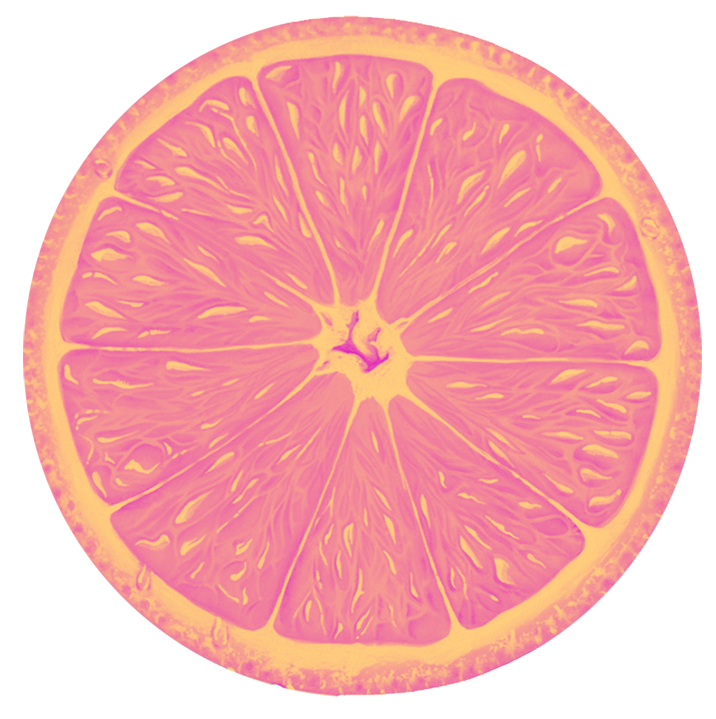
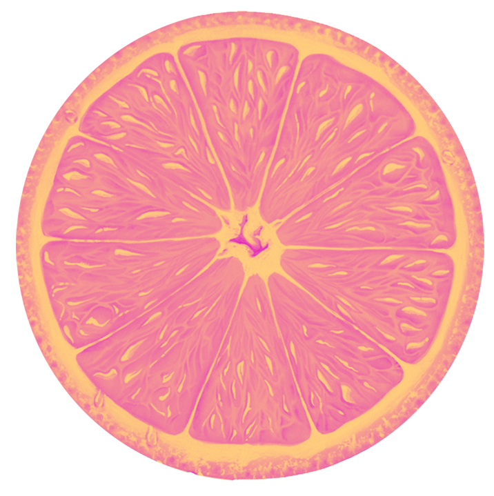
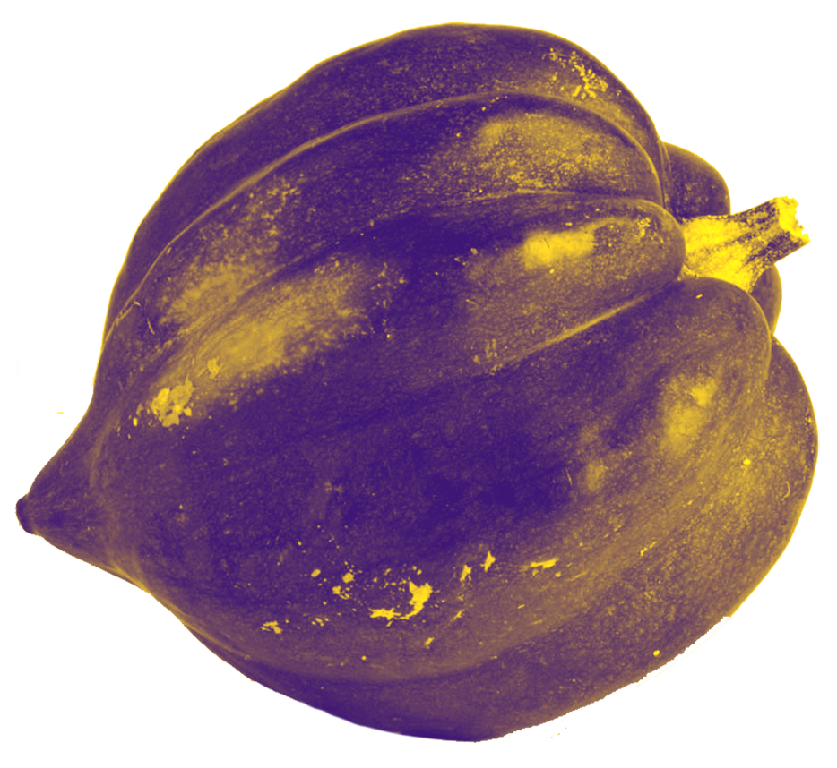
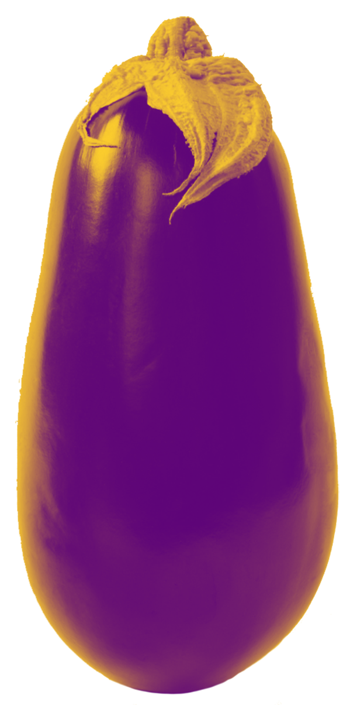
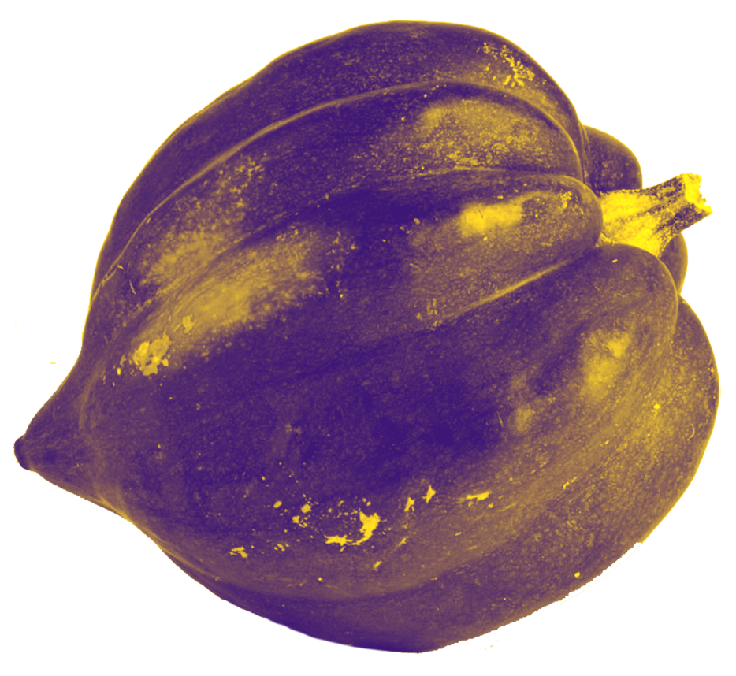
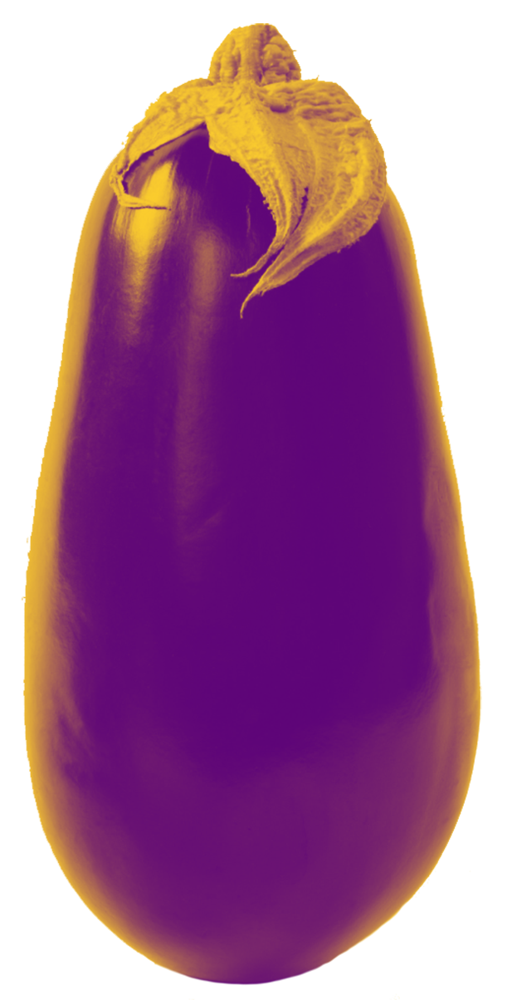

Eat Seasonally
Produce that is in season tastes better, costs less, supports your body’s natural needs, and is more environmentally friendly. When your produce is picked at just the right time, it contains more flavor and nutrients than the fruits and veggies that are picked early travel long distances to your grocery store. Not just more nutrition, but seasonally necessary nutrients. Freshly picked produce also contains the nutrition our body needs – such as beta-carotenes in our summer stone fruits that protect us against sun damage. When produce is in season, there is an abundance of it available, making it cost less. It also costs less when it’s grown close to home since it doesn’t need as much gas and handling before it reaches the grocery shelves. That smaller amount of gas also keeps our environment cleaner.


 



 


